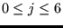
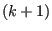
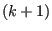
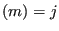
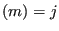
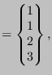
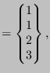

Next: Homogeneous linear equations Up: Reading the step input Previous: Reading the step input Contents
The first one is the cataloguing algorithm for SPC's (single
point constraints, *BOUNDARY). Let's say a boundary condition m is defined for node i in
direction j,
, direction 0 stands for temperature, directions 1
to 3 for translations in global x-, y- and z- direction, direction 4 stands
for static pressure, directions 5 to 7
stand for rotations about the global x-, y- and z-axis. Then a degree of
freedom
idof is assigned to this boundary condition. Then, it is
stored at location k in the one-dimensional field ikboun, where all previous boundary
degrees of freedom are stored in numerical order such that
ikbounidof
is assigned to this boundary condition. Then, it is
stored at location k in the one-dimensional field ikboun, where all previous boundary
degrees of freedom are stored in numerical order such that
ikbounidof ikboun. Furthermore the number of the boundary
condition (m) is stored in ilboun:
ilboun(k)=m, and the node of the boundary
condition, its direction and value are stored in the one-dimensional fields
nodeboun, ndirboun and xboun:
nodeboun
ikboun. Furthermore the number of the boundary
condition (m) is stored in ilboun:
ilboun(k)=m, and the node of the boundary
condition, its direction and value are stored in the one-dimensional fields
nodeboun, ndirboun and xboun:
nodeboun ,
ndirboun and
xboun
,
ndirboun and
xboun value. If an amplitude definition applies to
the boundary condition, its number
value. If an amplitude definition applies to
the boundary condition, its number  is stored in the one-dimensional field
iamboun:
iamboun
is stored in the one-dimensional field
iamboun:
iamboun .
.
The SPC type is stored in the one-dimensional field typeboun. SPC's can be of different types, depending on whether the were defined by a genuin *BOUNDARY CARD, or introduced for other reasons. The field typeboun is a one-dimensional character*1 field. Other reasons to introduce SPC's are:
The corresponding type code is:
The total number of boundary conditions is stored in variable nboun.
Consequently, ikboun contains all degrees of freedom of the boundary conditions in numerical order, and ilboun contains the corresponding boundary condition numbers. This assures that one can quickly check whether a given degree of freedom was used in a SPC. For example, if the SPC's look like:
*BOUNDARY 8,1,1,0. 10,1,2,0. 7,3,3,-1.
the fields look like:
nodeboun ndirboun xboun ndirboun xboun |
(774) |
typeboun ikboun ikboun ilboun ilboun |
(775) |
and nboun=4.
Finally, the following one-dimensional fields are also used:
Notice that among the boundary conditions SPC's are somewhat special. They are sometimes called geometric boundary conditions to distinguish them from the natural boundary conditions such as the application of a concentrated or distributed load. To remove a natural boundary condition, just set it to zero. This is not true for geometric boundary conditions: by setting a SPC to zero, the corresponding node is fixed in space which usually does not correspond to what one understands by removing the SPC, i.e. free unconstrained motion of the node. Therefore, to remove a SPC the option OP=NEW must be specified on the *BOUNDARY keyword card. This removes ALL SPC constraints. Then, the constraints which the user does not wish to remove must be redefined. Depending on the procedure (*STATIC, *DYNAMIC...), the change of SPC's is applied in a linear way. This means that the old SPC information must be kept to establish this linear change. That's why the fields nodebounold and ndirbounold are introduced. The relationship between the old and new SPC's is established in subroutine spcmatch, called from ccx_2.16.c.